# 什么是 Pentaho
Pentaho 是世界上最流行的开源商务智能软件，以工作流为核心的，强调面向解决方案而非工具组件的，基于 java 平台的商业智能 (Business Intelligence,BI) 套件 BI，之所以说是套件是因为它包括一个 web server 平台和几个工具软件：报表，分析，图表，数据集成，数据挖掘等，可以说包括了商务智能的方方面面。它整合了多个开源项目，目标是和商业 BI 相抗衡。它偏向于与业务流程相结合的 BI 解决方案，侧重于大 中型企业应用。它允许商业分析人员或开发人员创建报表，仪表盘，分析模型，商业规则和 BI 流程
# Pentaho 三大套件
# 1.Pentaho Data Integration
PDI 是一个 ETL 工具。PDI 由纯 java 编写，支持图形化的 GUI 设计界面，然后可以以工作流的形式流转，在做一些简单或复杂的数据抽取、质量检测、数据清洗、数据转换、数据过滤等方面有着比较稳定的表现，其中最主要的我们通过熟练的应用它，减少了非常多的研发工作量，提高了我们的工作效率.
# 简介
PDI 的前身为 kettle，是一款使用广泛的 ETL 工具，后被日立收购并整合进 Hitachi Vantara, 并改名为 Pentaho data integration
PDI 存在两种文件，一种是作业 (.kjb)，一种是转换 (.ktr)。作业是调度的单元，转换运行在作业里面，转换完成针对数据的基础转换，作业则完成整个工作流的控制
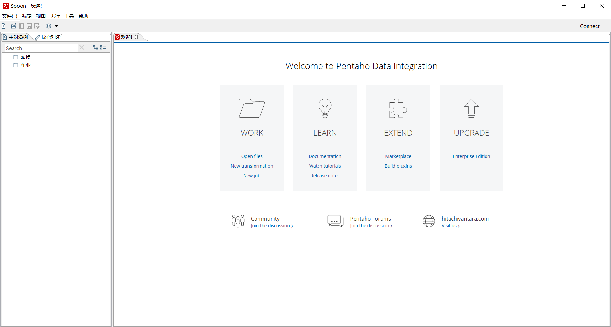
# 优点
- 免费开源
- 多平台，易配置
- 支持关系型数据库和非关系型数据库
- 通过图形界面设计实现做什么业务，无需写代码去实现，kettle 提供了大量的组件给我们去实现业务逻辑
- 定时功能
- 多种数据源类型
- 抽取速度快
# 2.Pentaho Report Designer
# 简介
Pentaho Report Designer（以下简称 PRD）是 Pentaho 开源系统中的数据报表模块，只要设置好数据源，通过拖拉的方式就可以设计出美观的商业报表
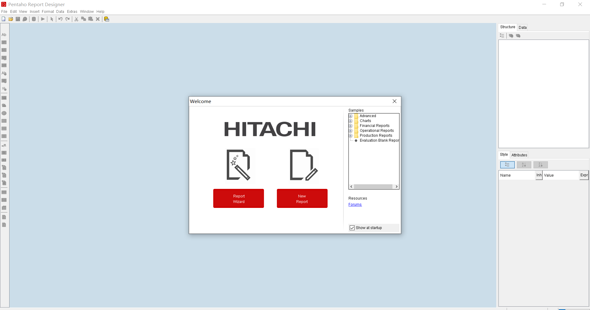
# 优点
- 免费开源
- 多平台
- 支持关系型数据库和非关系型数据库
- 图形界面设计报表
# 3.Pentaho Business Analytics
# 简介
Pentaho Business Analytics（以下简称 PBA）是 Pentaho 开源系统中的商业 BI 平台，他能调度 PDI 的作业，打开 PRD 的报表，还提供了数据服务 (CDA)，仪表盘设计及展示 (CDE)，用户权限认证等功能。PDI 运行在 Tomcat 上，作为 Web 服务对外提供服务。pba 上的文件加密存储在资源库中，能保证不同 pba 服务的文件一致
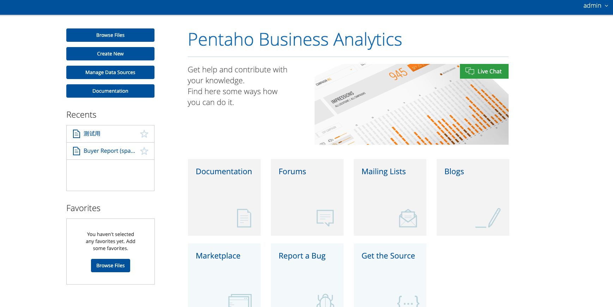
# 优点
- 免费开源
- 多平台
- 支持关系型数据库和非关系型数据库
- 图形界面设计仪表盘
- 能定时调度 PDI 作业
- 能展示 PRD 报表
- 能提供数据服务 (API)
- 能设置访问权限
- 能管理作业，报表，仪表盘数据
# Pentaho 社区版与商业版对比
虽然 pentaho 被日立收购，但是仍然大部分组件仍然是开源免费使用的，比如三大套件都是可以免费使用的，这点还是很良心的
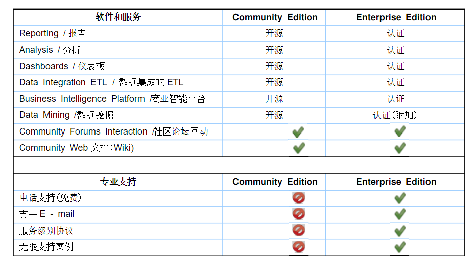
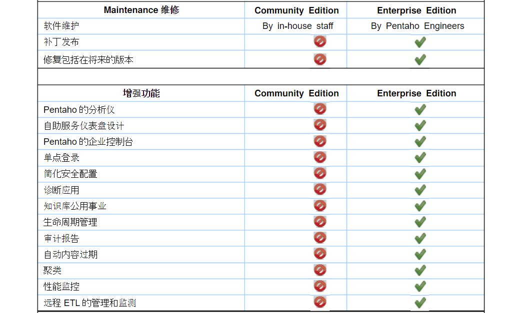
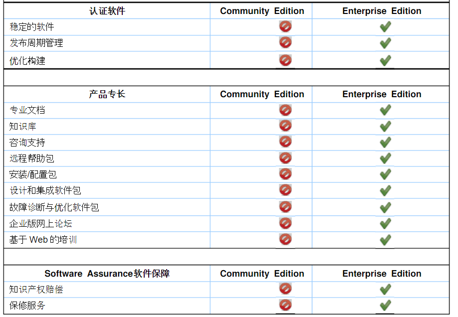
# 应用场景与案例
# 统一数据交换平台
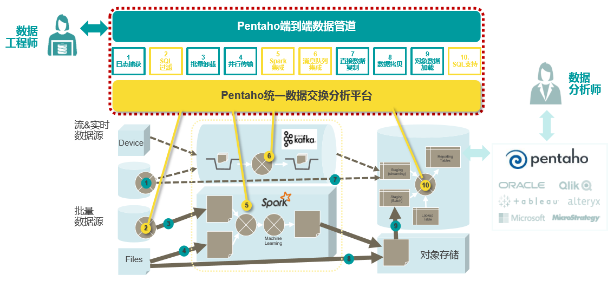
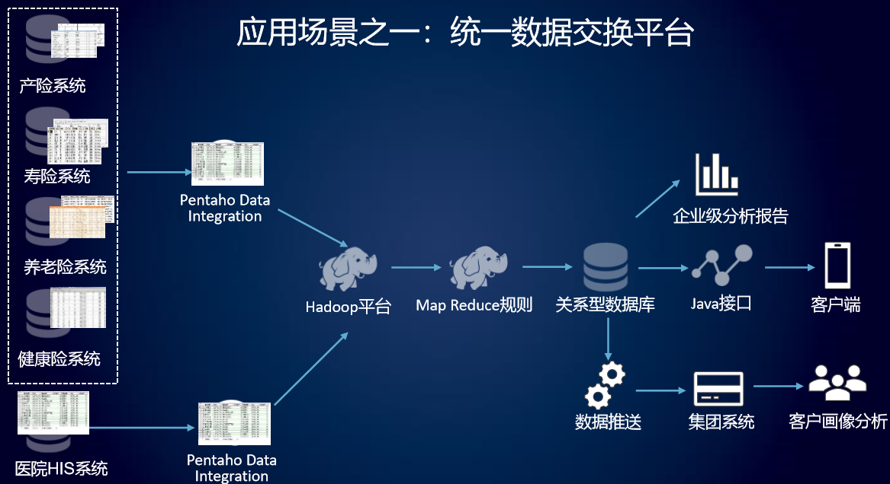
# 数仓迁移
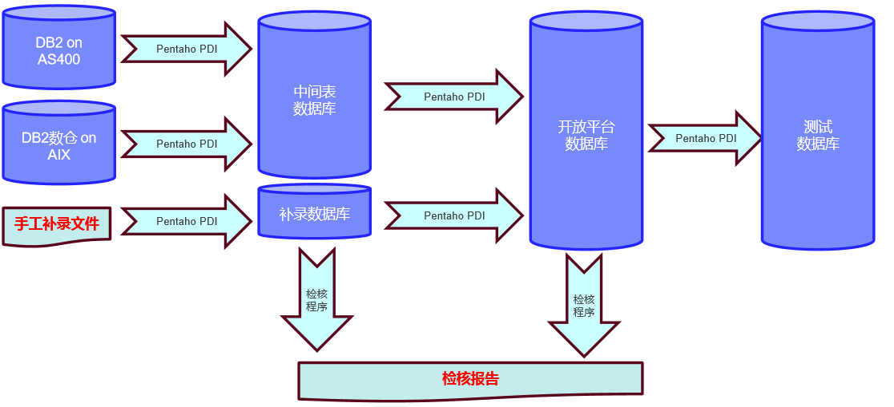
# 数据脱敏
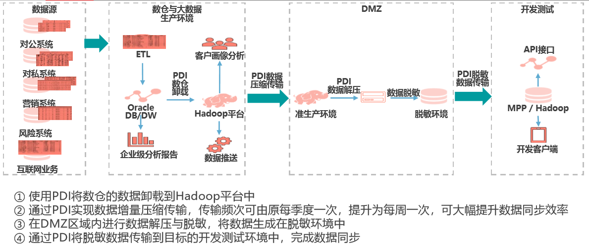
# 智能运维与监控
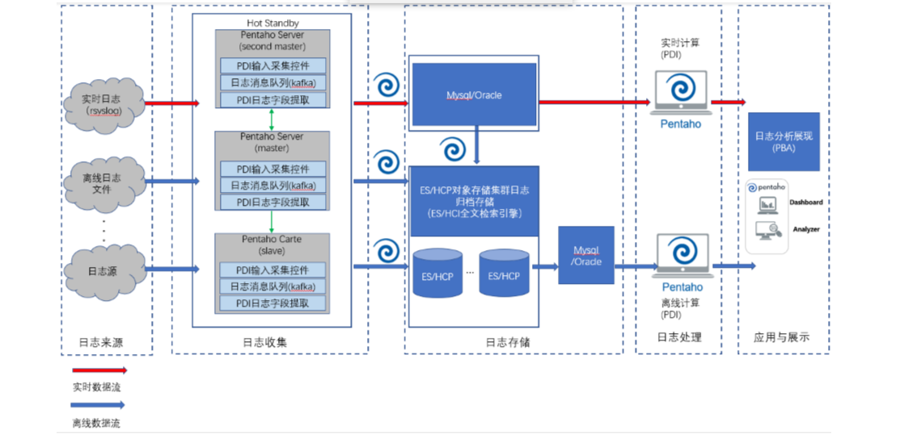